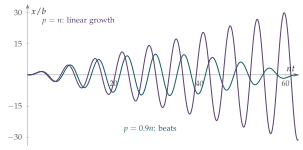

A particle is attached to one end \(B\) of a light elastic string of unstretched length \(a\). Initially the other end \(A\) is at rest and the particle hangs at rest at a distance \(a + c\) vertically below \(A\). At time \(t = 0\), the end \(A\) is forced to oscillate vertically, its downwards displacement at time \(t\) being \(b\sin pt\). Let \(x(t)\) be the downwards displacement of the particle at time \(t\) from its initial equilibrium position. Show that, while the string remains taut, \(x(t)\) satisfies \[\frac{\mathrm{d}^2x}{\mathrm{d}t^2} = -n^2(x - b\sin pt),\] where \(n^2 = g/c\), and that if \(0 < p < n\), \(x(t)\) is given by \[x(t) = \frac{bn}{n^2 - p^2}(n\sin pt - p\sin nt).\] Write down a necessary and sufficient condition that the string remains taut throughout the subsequent motion, and show that it is satisfied if \(pb < (n - p)c\).
The hook
Push a child on a swing at just the right moments and small pushes build into large swings. Push at the wrong rhythm and nothing much happens. Every oscillating system has a natural frequency, and driving it at that frequency produces a response out of all proportion to the effort. This is resonance. It is why a singer can shatter a wine glass, why soldiers break step when crossing a bridge, and why a radio can pick out one station from thousands.
This question shakes the top of an elastic string and asks when the string stays taut. The answer contains the factor \(\frac{1}{n - p}\), which blows up as the driving frequency \(p\) approaches the natural frequency \(n\): a gentle shake near resonance is enough to make the string go slack.
Before you start
The particle hangs in equilibrium with extension \(c\). If the string has modulus \(\lambda\), what is the relation between \(\lambda\), \(a\), \(c\), \(m\) and \(g\)? What is the extension when the top has moved down by \(b\sin pt\) and the particle by \(x\)?
In equilibrium, tension equals weight: \(\frac{\lambda c}{a} = mg\). When the top is displaced down by \(b\sin pt\) and the particle by \(x\), the string’s length increases by \(x - b\sin pt\), so the extension is \(c + x - b\sin pt\).
Working it through
Stage 1 The equation of motion
Taking downwards as positive, the forces on the particle are its weight \(mg\) and the tension \(\frac{\lambda}{a}(c + x - b\sin pt)\) upwards: \[m\ddot x = mg - \frac{\lambda}{a}(c + x - b\sin pt) = -\frac{\lambda}{a}(x - b\sin pt),\] using \(\frac{\lambda c}{a} = mg\). Since \(\frac{\lambda}{ma} = \frac{g}{c} = n^2\), this is \(\ddot x = -n^2(x - b\sin pt)\).■
The particle is pulled towards the moving point \(b\sin pt\) with a spring force. Without the driving, it would oscillate with angular frequency \(n\), its natural frequency.
Stage 2 Solving
The equation is \(\ddot x + n^2x = n^2b\sin pt\). Try a particular solution of the form \(x = C\sin pt\). Then add the general solution of \(\ddot x + n^2x = 0\). Which initial conditions does the particle satisfy?
Substituting \(x = C\sin pt\) gives \((-p^2 + n^2)C = n^2b\), so \(C = \frac{n^2b}{n^2 - p^2}\) (we need \(p \neq n\)). The complementary function is \(D\cos nt + E\sin nt\). The particle starts at rest in equilibrium: \(x(0) = 0\) forces \(D = 0\), and \(\dot x(0) = 0\) gives \(Cp + En = 0\), so \(E = -\frac{nbp}{n^2 - p^2}\). Altogether, \[x(t) = \frac{bn}{n^2 - p^2}(n\sin pt - p\sin nt). \qed\]
Stage 3 Staying taut
The string is taut exactly when its extension is positive. Write the extension \(c + x - b\sin pt\) in terms of \(t\).
Subtracting \(b\sin pt\) from \(x(t)\), \[\begin{aligned} x - b\sin pt &= \frac{b}{n^2 - p^2}\bigl(n^2\sin pt - np\sin nt - (n^2 - p^2)\sin pt\bigr) \\ &= \frac{bp}{n^2 - p^2}(p\sin pt - n\sin nt). \end{aligned}\] So the string remains taut throughout if and only if \[c + \frac{bp}{n^2 - p^2}(p\sin pt - n\sin nt) \geq 0 \qquad\text{for all } t \geq 0.\]
How negative can \(p\sin pt - n\sin nt\) possibly be?
Since \(|\sin| \leq 1\), we have \(p\sin pt - n\sin nt \geq -(p + n)\). So the extension is at least \[c - \frac{bp(n + p)}{n^2 - p^2} = c - \frac{bp}{n - p},\] which is positive if \(pb < (n - p)c\).■
What happens to this condition as \(p\) approaches \(n\)? How small must the shaking amplitude \(b\) be when \(p = 0.9n\)? When \(p = 0.99n\)?
Looking back
Measure from equilibrium. Using the equilibrium extension \(c\) removed gravity from the equation.
Particular plus complementary. The forced response at frequency \(p\) plus the free oscillation at frequency \(n\), with constants fixed by the initial conditions.
Bound, do not solve. We did not find the minimum extension exactly; a crude bound on the sines was enough for a sufficient condition.
What’s really going on
The resonance limit
Let \(p \to n\) in the solution. Both the numerator and the denominator tend to zero, and a limit calculation (or l’Hôpital’s rule, differentiating with respect to \(p\)) gives \[x(t) \to \frac{b}{2}(\sin nt - nt\cos nt).\] The term \(nt\cos nt\) grows without limit: driving exactly at the natural frequency makes the amplitude increase linearly in time, each push adding to the motion in step with it. Just below resonance, the two frequencies drift in and out of step, producing beats: the amplitude swells and dies away with the slow frequency \(n - p\) (Figure 11.1.1). The same beats are heard when two guitar strings are almost in tune.

Damping and the resonance curve
Real systems lose energy, through friction or air resistance, and that limits the growth. With damping, the steady response to a driving force at frequency \(p\) has an amplitude that peaks near the natural frequency; the sharper the peak, the less damping there is. Engineers describe this by the quality factor \(Q\): roughly, the number of oscillations a system makes before losing most of its energy. A wine glass has \(Q\) in the thousands, which is why a sustained note at exactly its natural frequency can break it. A car’s suspension is deliberately given a low \(Q\), so that bumps do not set it bouncing.
In 1831 a column of soldiers marching in step over the Broughton Suspension Bridge near Manchester set it vibrating until it collapsed; since then, troops have been ordered to break step on bridges. The London Millennium Bridge, opened in June 2000, began to sway sideways as soon as crowds crossed it: pedestrians unconsciously adjusted their steps to the sway, feeding it energy in step, and the bridge closed for two years while dampers were fitted. The famous collapse of the Tacoma Narrows Bridge in 1940 is often described as resonance, but it was a different phenomenon, aeroelastic flutter, in which the wind’s force depends on the bridge’s own motion. Its analysis needs the ideas of self-excited oscillation and limit cycles (Section 8.4).
The thinking skill
For a linear equation driven by a periodic force, the solution is the response at the driving frequency plus a free oscillation at the natural frequency, chosen to fit the starting conditions.
Linearity makes this work: solutions can be added. At university, the same principle, applied to sums of many driving frequencies, leads to Fourier analysis, transfer functions in engineering, and Green’s functions in physics.
Try this next
A falling lift. (From STEP II, 1996.) A particle hangs from the ceiling of a lift by an elastic string, extended by \(a\). The lift starts to descend with constant acceleration \(f < \frac g2\). Show that the extension \(y\) of the string satisfies \(\ddot y + \frac ga\,y = g - f\), that the string never becomes slack, and that the oscillation has amplitude \(\frac{af}{g}\). After time \(T\) the lift stops accelerating. Show that the amplitude becomes \(\frac{2af}{g}\bigl|\sin\frac12\omega T\bigr|\), where \(\omega^2 = \frac ga\).
At resonance. Solve \(\ddot x + n^2x = n^2b\sin nt\) with \(x(0) = \dot x(0) = 0\) directly, by trying a particular solution \(x = Ct\cos nt\). Check that it agrees with the limit above.
Beats. Show that \(n\sin pt - p\sin nt\) can be written as a sum of two terms, one of which is approximately \(2n\cos\frac{(n+p)t}{2}\sin\frac{(p-n)t}{2}\) when \(p\) is close to \(n\). Hence explain the beat period \(\frac{2\pi}{n - p}\).
Damped resonance. For \(\ddot x + 2k\dot x + n^2x = F\cos pt\) with small \(k > 0\), find the steady-state amplitude, and show that it is greatest when \(p^2 = n^2 - 2k^2\).
Further reading
A. P. French, Vibrations and Waves (MIT Introductory Physics Series). Chapter 4 on forced oscillations and resonance is the classic account.
Steven Strogatz, Sync (Penguin). How things fall into step, from fireflies to the Millennium Bridge.
Henry Petroski, To Engineer Is Human (Vintage). Engineering failures, including the bridges in the history box.